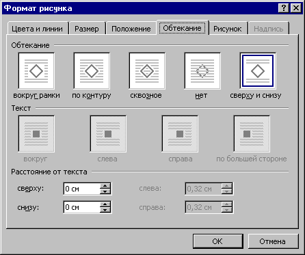

- В режиме разметки выделите поле или графический
объект.
- Выберите команду Автофигура, Поле, Рисунокили
Объект в меню Формат, а затем — вкладку Обтекание.
- В группе Обтекание выберите необходимый
параметр.
- В группе Текст выберите стороны поля или
графики, вокруг которых необходимо расположить
текст.
- В полях группы Расстояние от текста определите
расстояние между полем или графикой и
расположенным вокруг текстом.

Рисунок 8.3
Назад | Содержание
| Вперед